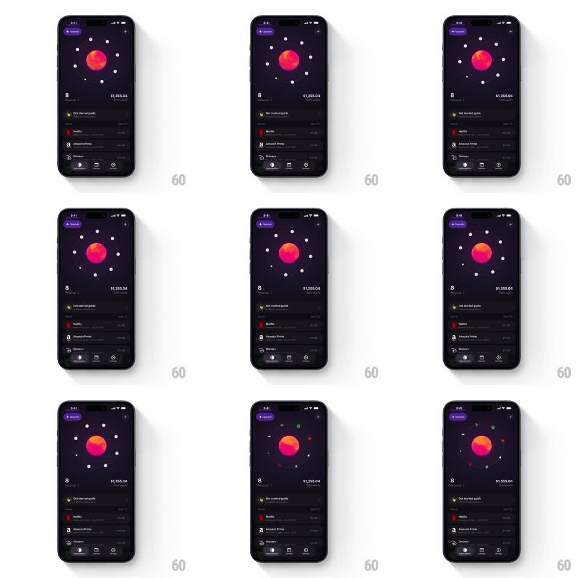

Media
Frame-by-frame

Rebuild this animation 1:1: Orbit's header orbit - tapping the central gradient planet sends the ring of subscription icons on a playful spin around it.

Rebuild this animation 1:1: Orbit's header orbit - tapping the central gradient planet sends the ring of subscription icons on a playful spin around it. ## Integration Integration: stack-agnostic spec - springs given as stiffness/damping, timed motions as duration + curve; map every value to your framework and animation library of choice. ## Scene Orbit home, dark: "+ Upgrade" pill top-left, a pink-orange gradient planet at center, small subscription icons and dots spaced on one elliptical orbit ring around it, "8" and "$1,355.04" totals under the planet, then the subscription list (Get started guide, Netflix, Amazon Prime, Disney+) and tab bar. ## Motion spec Pattern: tap-triggered spin of an orbiting icon ring. - At idle the icon ring drifts slowly (one revolution per ~40s); icons stay upright - only their positions orbit, the glyphs never rotate. - Tap the planet: it pulses (scale 1 -> 1.08 -> 1, 300ms spring ~400/16) and the ring accelerates into a fast spin - angular velocity ramps to ~360deg/s over 250ms, holds ~1.5 revolutions, then eases back to the idle drift over 600ms (ease-out). - During the spin the icons swap: each icon crossfades to a different subscription's icon at its fastest point (100ms per swap, staggered around the ring), landing on a new shuffled set when the spin settles. - Small satellite dots on the ring trail slightly behind the icons during acceleration (lag angle ~8deg, catching up as the spin eases). - The totals and list below never move - the orbit is the only element in motion. ## Calibration - The planet stays glued to center - only the ring spins. - Icon upright lock is mandatory; rotating glyphs reads as a ferris wheel bug, not an orbit. ## Reduced motion Tap pulses the planet only; the icon set crossfades (250ms) without spinning. ## Don't miss - The orbit ring is elliptical (squashed ~0.7 vertically) with a subtle depth cue - icons shrink ~15% and dim at the back of the ring. - The "+ Upgrade" pill and tab bar stay perfectly still.